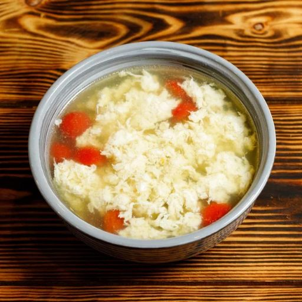
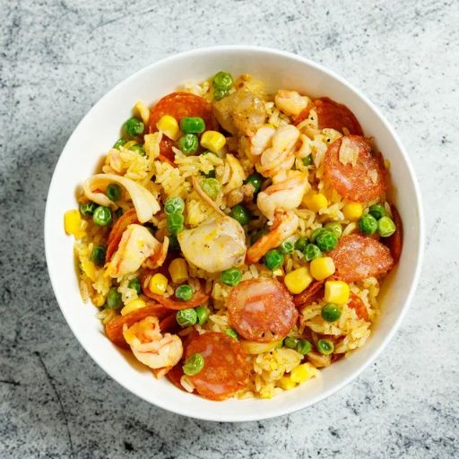
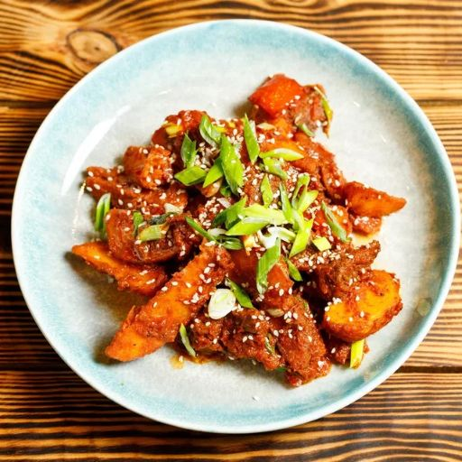
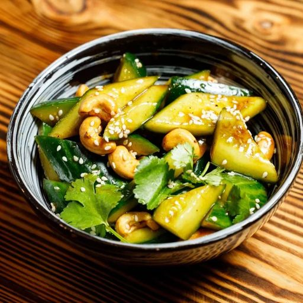
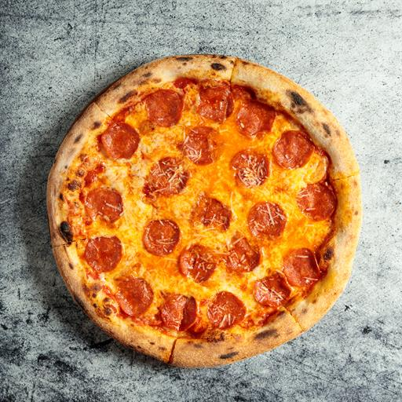
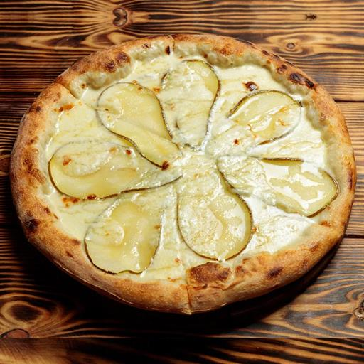
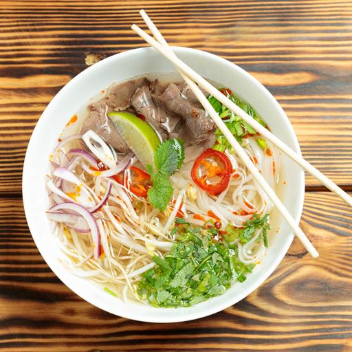
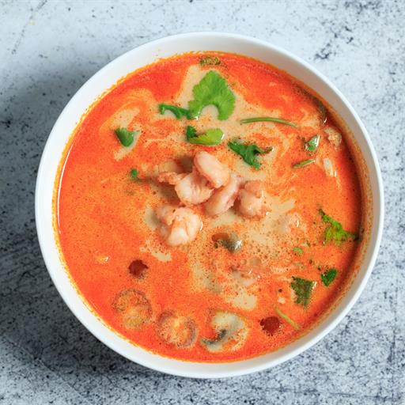

Новинки
-

Китайский яичный супТрадиционный китайский суп с яйцом и томатами черри -

ПаэльяТрадиционное испанское блюдо — рис, колбаски чоризо, куриное бедро, кальмар, кукуруза, горошек, специи -

Биф БургиньонБлюдо французской кухни — тушёные кусочки говядины с картофелем и болгарским перцем -

Битые огурцыСалат из свежих битых огурцов с уйгурским соусом, кешью и кунжутом
Популярное
-

ПепперониПросто и вкусно — томатная основа маринара, колбаски пепперони и сыр моцарелла -

Груша ГоргонзолаНежная пицца на основе сливочного соуса с сыром горгондзола, грушей, медом и кедровыми орехами -

Фо БоВьетнамский суп с рисовой лапшой, в котором используется говядина, свежая зелень и ростки сои. Подают с добавками, такими как мята, долька лайма, острый соус шрирача, азиатский уксус и лаоганма -

Том Ям с морепродуктамиТрадиционный тайский суп, на основе кокосового молока и сливок, с добавлением креветок, кальмаров, грибов шиитаке и шампиньонов, помидоров черри и свежей зелени. Подается с паровым тайским рисом